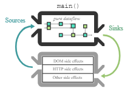
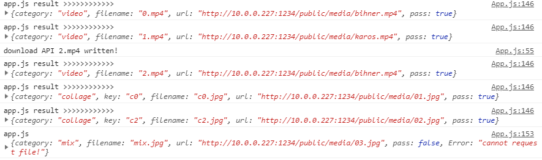
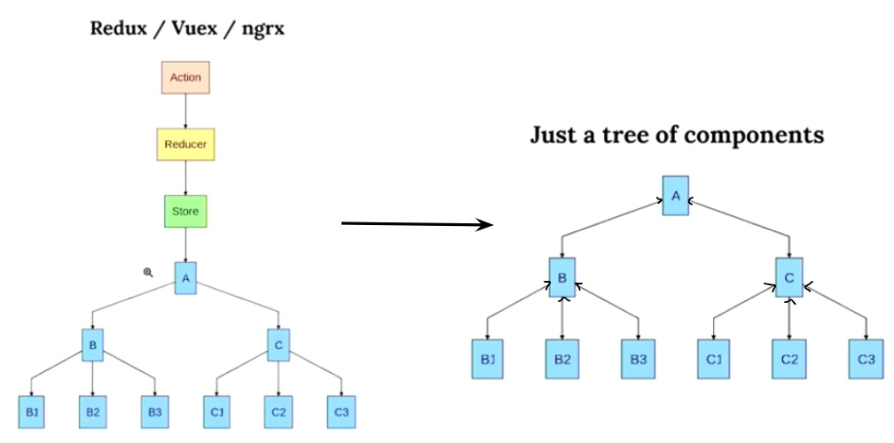

Why I decided to use Functional lenses instead of Redux (Redux Saga)
I’d like to talk about the problems and solutions that I encountered while writing code in react.js on my projects: The United media display I did in early 2019, and the BABE-ROSE in the beginning of this new year. The United project is a multi-mode media playback application along with a small CMS.


Users can upload contents to the CMS and change the playback modes on a tablet (KIOS Webpage). The modes are video playback, still image, or mixed. The project was developed in Cycle.js and React.js.
The reason why I used Cycle.js without using only the React was because, first and foremost, I wanted to take advantage of the characteristics of the framework; the function’s output becomes its input. So, I cycled the modified or processed props into my function as input again. It seemed really promising as it worked without using Redux.

Diagram of Cycle.js framework
Secondly, I thought async events handling seemed to be easier by streamlining all callbacks that were inevitably used when saving or downloading files from media server to local storage.
However, as I developed the app, I realized my theory was far off from the actual situation. By then, it was too far to go back. The project deadline was around the corner.
The biggest problem I had, was there were some components I wrote that needed to repeat a set of tasks when there was a network error (downloading assets, communicating with websocket server, etc.). It seemed like Cycle.js was not a good framework for this type of situation, since all the events became a linear stream at the end-- I realized this was incorrect. Now, I know I could have achieved the same result with Cycle.js. It was just how I designed the system. Also I didn’t know about Redux-saga at this point. As a result, I had to use Redux to solve the issue that I had.
Metal model of Redux and Redux Saga
Regardless of using Redux or Redux-saga, the fundamental problem was the more complex my logic becomes, the more dispatch events and reducers are needed to resolve this situation. When the reducers were less than 10, it wasn’t a problem to draw a mental model in my head. However, after over 20, I simply gave up keeping track of the logic flow between dispatching events and how they affected my app flow. Therefore, if there was an error in a particular part, it would take more time to debug along the logic paths.
/../
const modeChangeListener =
{
next: data => {
let mode = data.mode
switch (mode) {
case 'ws_connected':
if(lastError === "CANNOT TALK TO SERVER")
sources.react.props()._v.dispatch(UPDATE_ERROR(''))
sources.react.props()._v.dispatch(CHANGE_MODE('empty'))
sources.react.props()._v.dispatch(CHANGE_MODE('lobby'))
break
case 'ws_error':
sources.react.props()._v.dispatch(UPDATE_ERROR('CANNOT TALK TO SERVER'))
sources.react.props()._v.dispatch(CHANGE_MODE('empty'))
sources.react.props()._v.dispatch(CHANGE_MODE('lobby'))
break
case 'stamp':
let rawServerStamp = data.time
let serverStamp = moment(rawServerStamp,format)
if(localTime === "") localTime = "January 23rd 2018, 2:45:19 pm"
let localStamp = moment(localTime,format)
if(serverStamp.isAfter(localStamp)){
sources.react.props()._v.dispatch(CHANGE_MODE('empty'))
sources.react.props()._v.dispatch(UPDATE_MODE_JSON('download',data,()=> {
localTime = rawServerStamp
}))
}
break
case 'idle':
sources.react.props()._v.dispatch(CHANGE_MODE('idle'))
break
case 'video':
sources.react.props()._v.dispatch(PICK_CLIP(data.clips))
sources.react.props()._v.dispatch(CHANGE_MODE('empty'))
sources.react.props()._v.dispatch(CHANGE_MODE('video'))
break
case 'mix_video':
sources.react.props()._v.dispatch(PICK_MIX_CLIP(data.clip))
sources.react.props()._v.dispatch(CHANGE_MODE('empty'))
sources.react.props()._v.dispatch(CHANGE_MODE('mix_video'))
break
case 'collage':
sources.react.props()._v.dispatch(PICK_COLLAGE(data.collage))
sources.react.props()._v.dispatch(CHANGE_MODE('empty'))
sources.react.props()._v.dispatch(CHANGE_MODE('photo'))
break
case 'mix':
sources.react.props()._v.dispatch(CHANGE_MODE('mix'))
break
default :
sources.react.props()._v.dispatch(CHANGE_MODE('config'))
break
}
},
error: err => console.log('app.js','modeChange$',err),
complete:()=>console.log('app.js','modeChange$ is disposed')
}
/../ |
Already I did not have any time left to refactor the entire structure again, and spent too much time on each component and reducer checking whether they were receiving the expected props or not.

Pages long log outputs :(
Since then, I have used some other ways to solve this complexity of using Redux. But, it seemed almost impossible to completely abandon Redux, since props are always coming from top to bottom because of how React framework is designed. So I had to use Redux itself or a similar structure instead. There seemed to be no other way around. Then, I tumbled upon ‘functional lenses’ one day. I thought that when I used it, I could make a React app anyway I wanted without using Redux finally.
Functional lenses are a common pattern in functional programming languages such as Haskell. But in a nutshell, you can think of them as an object that has getters and setters packed together. Similar manner as React Hooks
[getter,setter] = useState(initSate) |
But unlike Hooks, you can customize these getters and setters to work the way you want. Therefore, the structure of the application can be simplified as below.

*This example and description was taken from use-profunctor-state github page.
Suppose your app handles temperatures in Fahrenheit, but one component works only with Celsius. You can create a conversion layer between those two with promap(get, set).
Open this also in a CodeSandbox.
function App() {
const initialState = {fahrenheit: 70, other: {}}
const appProf = useProfunctorState(initialState);
// or:
// const {state, setState, promap} = useProfunctorState(initialState);
const celsiusProf = appProf.promap(
state => fToC(state.fahrenheit),
(celsius, state) => ({ ...state, fahrenheit: cToF(celsius) })
);
return (
<div>
<div>Global app state: {JSON.stringify(appProf.state)}</div>
<CelsiusThermometer {...celsiusProf} />
</div>
);
} |
Because promap is composable, you can also split the conversion layer into multiple parts:
const celsiusProf = appProf
.promap(s => s.fahrenheit, (f, s) => ({ ...s, fahrenheit: f }))
.promap(fToC, cToF); |
The CelsiusThermometer component received props state, setState and promap from the spread of celsiusProf:
- state: in this case it's a number representing celsius
- setState: does what you think it does!
- promap: use this if CelsiusThermometer would have children components
function CelsiusThermometer({ state, setState, promap }) {
const onColder = () => setState(prev => prev - 5);
const onHotter = () => setState(prev => prev + 5);
return (
<div>
<button onClick={onColder}>Colder</button>
<button onClick={onHotter}>Hotter</button>
<Thermometer value={state} max="100" steps="4" format="°C" />
</div>
);
} |
The recent project I did BABE-ROSE has a relatively simple structure compared to the United project. However, It was very easy to develop using the functional lenses (use-profunctor-state). The mental model drawn in my head was simple and clear. When I used it, a React function component with Hooks, it was almost frictionless.
const rws = new ReconnectingWebSocket('ws://localhost:5000');
rws.addEventListener('open', () => {
console.log("ws connection open!")
})
rws.addEventListener('message', (Event) => {
console.log("ws message: ",Event.data)
})
const switchComp = (pro) => {
// console.table(pro.state)
switch (pro.state.path) {
case '/':
return <Idle {...pro}/>
case '/reg':
return <Registration {...pro}/>
case '/select':
return <FilterSelection {...pro}/>
case '/ready':
return <Ready {...pro}/>
case '/count':
return <CountDown {...pro}/>
case '/preview':
return <PreView {...pro}/>
case '/thank':
return <ThankYou {...pro}/>
default:
return <Idle {...pro}/>
}
}
function App() {
const sendWS = (msg) => rws.send(msg)
const initState = {path:'/', data:{}, send:sendWS}
const appProf = useProfunctorState(initState)
/.../
const prof = appProf.promap(
state => state,
({path,data}, state) => ({ ...state, path: path, data: data})
/.../
return (
<div style={{width:"100vw",height:'100vh', margin:'0'}}>
{switchComp(prof)}
<ResetButton onClick={onReset}/>
</div>
)
} |
- No more reducers / dispatches
- Super simple to define how getter and setter will behave
- I can even pass the websocket send method into state object so I can use it anywhere.
- Imagine how tedious work it would be to just setup redux-saga for websocket.
function CountDown({ state, setState }) {
const maxCount = 3
const processBuffer = 3
const [count,setCount] = useState(maxCount)
setTimeout(() => {
if(count > -processBuffer){
if(count === 0){
state.send(JSON.stringify({id:'reg', action:'save', preview:false}))
setTimeout(()=>{
setState(pre => ({...pre,path:'/preview'}))
},processBuffer * 1000)
}
setCount(count -1)
}
},1000)
return (
<Row3GridDiv >
<div>
<BabeLogo src = {logo}/>
</div>
<div >
<BigTextDiv>{count>0?count:<span> </span>}</BigTextDiv>
<SodaWrapper>
<SodaCan src={Three} offset={count < 3 ?'80':'0'}/>
<SodaCan src={One} offset={count < 1 ?'80':'0'}/>
<SodaCan src={Two} offset={count < 2 ?'80':'0'}/>
</SodaWrapper>
<ProcssingeDiv offset={count < 1 ?'-90':'0'}>{'Processing...'}</ProcssingeDiv>
<HashTagImg src={hashTag}/>
</div>
</Row3GridDiv>
)
}
|
- Countdown component just taking getter and setter as props
- Call setter(setState method in this case) to update parent props
Conclusion
Of course, functional lenses can’t solve all the problems. However, it simplifies the logic structure and reduces bugs and errors that may arise while developing an app. Also it makes debugging much easier; debugging would take less time since the entire code surface is relatively smaller than using Redux (Redux-saga).